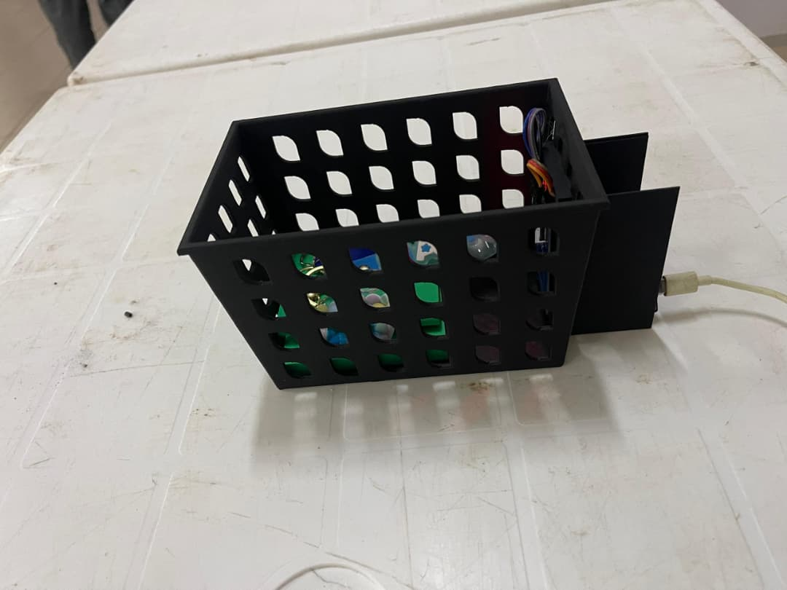

ESP32 ou lecteur série
Le matériel envoie l’UID du tag sur le port COM du PC.
PANIER INTELLIGENT RFID
AutomaticCheck associe un panier, l’identification RFID, un catalogue local et une interface mobile afin de rendre l’encaissement plus simple et plus fluide.
Ouvrir le guide de démarrage →DÉMARRAGE LOCAL
La documentation fonctionne avec le serveur déjà démarré sur le port 8000. L’application RFID, elle, se lance séparément depuis le dossier AutomaticCheck.
python -m http.server 8000 --directory docs/site
Ouvrir ensuite http://localhost:8000/. Cette interface contient désormais le cahier des charges : aucun lien externe au dossier du site n’est nécessaire.
cd AutomaticCheck python -m venv .venv .\\.venv\\Scripts\\Activate.ps1 pip install -r requirements.txt python create_db.py python backend.py
Ouvrir alors http://localhost:5000/.
ARCHITECTURE
Le matériel envoie l’UID du tag sur le port COM du PC.
Le serveur normalise l’UID, cherche le produit et met à jour le panier.
Le navigateur consulte l’API et présente le panier ainsi que le paiement de démonstration.
CE QUI EST DÉJÀ RÉALISÉ

Panier prototype conçu et imprimé en 3D — photo fournie par l’équipe projet.
FEUILLE D’ACHATS
Cette liste est issue du document d’équipements du projet. Elle correspond à la cible d’un panier autonome déployable en magasin.
| Famille | Équipements à acquérir | Quantité | But |
|---|---|---|---|
| Calcul embarqué | Raspberry Pi 4 (4 Go) ou Pi 5, carte SD 32 Go, convertisseur 5V/3A | 1 de chaque | Faire fonctionner le panier sans PC embarqué externe. |
| RFID UHF | Lecteur SparkFun M6E Nano, 2 antennes patch 5 dBi, 2 câbles SMA | 1 / 2 / 2 | Lire plusieurs produits déposés dans le panier. |
| Tags | Étiquettes UHF EPC Gen2, Alien Higgs-3 ou Monza R6 | 1 000+ | Identifier les articles du magasin. |
| Pesée | 4 cellules de charge 50 kg, 2 modules HX711 | 4 / 2 | Contrôler le contenu et réduire les erreurs. |
| Interface et énergie | Écran tactile 7 pouces, power bank 20 000 mAh, câbles, boîtier IP54 | 1 jeu | Utilisation autonome et protection des composants. |
| Magasin | Mini-PC/NAS, Wi-Fi professionnel, portique UHF, borne de recharge, terminaux de paiement | Selon installation | Connecter et exploiter plusieurs paniers. |
API FLASK
CODE
Flask expose l’API. Un verrou protège le panier pendant les lectures RFID et les requêtes web.
Crée la table produits et associe chaque UID à un nom, un prix, une catégorie et un stock.
HTML structure l’interface, CSS assure l’adaptation mobile et JavaScript actualise le panier chaque seconde.
def normaliser_uid(uid):
return re.sub(r"[^0-9A-Fa-f]", "", uid or "").upper()Cette fonction retire les séparateurs, uniformise les majuscules et évite qu’un même tag soit recherché sous plusieurs formats.
CAHIER DES CHARGES
AutomaticCheck est un prototype de caisse autonome qui identifie les produits RFID et affiche le panier sur une interface mobile. Son objectif actuel est de valider le parcours utilisateur et le prototype matériel.
Lire un UID, le normaliser et retrouver le produit dans le catalogue local.
Ajouter ou retirer un produit, ignorer les doublons de lecture et signaler les UID inconnus.
Afficher le panier sur mobile, réinitialiser et confirmer un paiement de démonstration.
Le paiement est simulé. Les stocks, les comptes utilisateurs, l’historique des ventes, l’authentification et la sécurisation de production ne sont pas encore implémentés. La prochaine étape est le choix RFID UHF puis l’intégration d’un lecteur adapté et de la pesée.
DÉPLOIEMENT
VotreOrganisation/AutomaticCheck.main..github/workflows/deploy-documentation.yml publie automatiquement le dossier docs/site.git add . git commit -m "Mise à jour de la documentation" git push origin main
Une fois l’action terminée, le site sera généralement disponible à l’adresse https://votreorganisation.github.io/AutomaticCheck/. Un administrateur de l’organisation doit autoriser GitHub Pages et GitHub Actions.